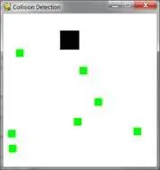
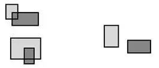
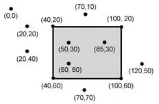
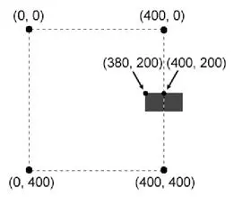
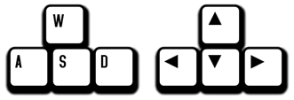

|
|
Chapter 18 |
Collision Detection and Keyboard/Mouse Input |
Topics Covered In This Chapter:
· Collision Detection
· Don’t Modify a List While Iterating Over It
· Keyboard Input in Pygame
· Mouse Input in Pygame
Collision detection is figuring when two things on the screen have touched (that is, collided with) each other. For example, if the player touches an enemy they may lose health. Or the program needs to know when the player touches a coin so that they automatically pick it up. Collision detection can help determine if the game character is standing on solid ground or if there’s nothing but empty air underneath them.
In our games, collision detection will determine if two rectangles are overlapping each other or not. Our next example program will cover this basic technique.
Later in this chapter, we’ll look at how our Pygame programs can accept input from the user through the keyboard and the mouse. It’s a bit more complicated than calling the input() function like we did for our text programs. But using the keyboard is much more interactive in GUI programs. And using the mouse isn’t even possible in our text games. These two concepts will make your games more exciting!
Much of this code is similar to the animation program, so the explanation of the moving and bouncing code is skipped. (See the animation program in Chapter 17 for that.) A bouncer will bounce around the window. A list of Rect objects will represent food squares.
On each iteration through the game loop, the program will read each Rect object in the list and draw a green square on the window. Every forty iterations through the game loop we will add a new Rect object to the list so that the screen constantly has new food squares in it.
The bouncer is represented by a dictionary. The dictionary has a key named 'rect' (whose value is a pygame.Rect object) and a key named 'dir' (whose value is one of the constant direction variables like we had in last chapter’s Animation program).
As the bouncer bounces around the window, we check if it collides with any of the food squares. If it does, we delete that food square so that it will no longer be drawn on the screen. This will make it look like the bouncer “eats” the food squares in the window.
Type the following into a new file and save it as collisionDetection.py. If you get errors after typing this code in, compare the code you typed to the book’s code with the online diff tool at http://invpy.com/diff/collisionDetection.
collisionDetection.py
1. import pygame, sys, random
2. from pygame.locals import *
3.
4. def doRectsOverlap(rect1, rect2):
5. for a, b in [(rect1, rect2), (rect2, rect1)]:
6. # Check if a's corners are inside b
7. if ((isPointInsideRect(a.left, a.top, b)) or
8. (isPointInsideRect(a.left, a.bottom, b)) or
9. (isPointInsideRect(a.right, a.top, b)) or
10. (isPointInsideRect(a.right, a.bottom, b))):
11. return True
12.
13. return False
14.
15. def isPointInsideRect(x, y, rect):
16. if (x > rect.left) and (x < rect.right) and (y > rect.top) and (y < rect.bottom):
17. return True
18. else:
19. return False
20.
21.
22. # set up pygame
23. pygame.init()
24. mainClock = pygame.time.Clock()
25.
26. # set up the window
27. WINDOWWIDTH = 400
28. WINDOWHEIGHT = 400
29. windowSurface = pygame.display.set_mode((WINDOWWIDTH, WINDOWHEIGHT), 0, 32)
30. pygame.display.set_caption('Collision Detection')
31.
32. # set up direction variables
33. DOWNLEFT = 1
34. DOWNRIGHT = 3
35. UPLEFT = 7
36. UPRIGHT = 9
37.
38. MOVESPEED = 4
39.
40. # set up the colors
41. BLACK = (0, 0, 0)
42. GREEN = (0, 255, 0)
43. WHITE = (255, 255, 255)
44.
45. # set up the bouncer and food data structures
46. foodCounter = 0
47. NEWFOOD = 40
48. FOODSIZE = 20
49. bouncer = {'rect':pygame.Rect(300, 100, 50, 50), 'dir':UPLEFT}
50. foods = []
51. for i in range(20):
52. foods.append(pygame.Rect(random.randint(0, WINDOWWIDTH - FOODSIZE), random.randint(0, WINDOWHEIGHT - FOODSIZE), FOODSIZE, FOODSIZE))
53.
54. # run the game loop
55. while True:
56. # check for the QUIT event
57. for event in pygame.event.get():
58. if event.type == QUIT:
59. pygame.quit()
60. sys.exit()
61.
62. foodCounter += 1
63. if foodCounter >= NEWFOOD:
64. # add new food
65. foodCounter = 0
66. foods.append(pygame.Rect(random.randint(0, WINDOWWIDTH - FOODSIZE), random.randint(0, WINDOWHEIGHT - FOODSIZE), FOODSIZE, FOODSIZE))
67.
68. # draw the black background onto the surface
69. windowSurface.fill(BLACK)
70.
71. # move the bouncer data structure
72. if bouncer['dir'] == DOWNLEFT:
73. bouncer['rect'].left -= MOVESPEED
74. bouncer['rect'].top += MOVESPEED
75. if bouncer['dir'] == DOWNRIGHT:
76. bouncer['rect'].left += MOVESPEED
77. bouncer['rect'].top += MOVESPEED
78. if bouncer['dir'] == UPLEFT:
79. bouncer['rect'].left -= MOVESPEED
80. bouncer['rect'].top -= MOVESPEED
81. if bouncer['dir'] == UPRIGHT:
82. bouncer['rect'].left += MOVESPEED
83. bouncer['rect'].top -= MOVESPEED
84.
85. # check if the bouncer has move out of the window
86. if bouncer['rect'].top < 0:
87. # bouncer has moved past the top
88. if bouncer['dir'] == UPLEFT:
89. bouncer['dir'] = DOWNLEFT
90. if bouncer['dir'] == UPRIGHT:
91. bouncer['dir'] = DOWNRIGHT
92. if bouncer['rect'].bottom > WINDOWHEIGHT:
93. # bouncer has moved past the bottom
94. if bouncer['dir'] == DOWNLEFT:
95. bouncer['dir'] = UPLEFT
96. if bouncer['dir'] == DOWNRIGHT:
97. bouncer['dir'] = UPRIGHT
98. if bouncer['rect'].left < 0:
99. # bouncer has moved past the left side
100. if bouncer['dir'] == DOWNLEFT:
101. bouncer['dir'] = DOWNRIGHT
102. if bouncer['dir'] == UPLEFT:
103. bouncer['dir'] = UPRIGHT
104. if bouncer['rect'].right > WINDOWWIDTH:
105. # bouncer has moved past the right side
106. if bouncer['dir'] == DOWNRIGHT:
107. bouncer['dir'] = DOWNLEFT
108. if bouncer['dir'] == UPRIGHT:
109. bouncer['dir'] = UPLEFT
110.
111. # draw the bouncer onto the surface
112. pygame.draw.rect(windowSurface, WHITE, bouncer['rect'])
113.
114. # check if the bouncer has intersected with any food squares.
115. for food in foods[:]:
116. if doRectsOverlap(bouncer['rect'], food):
117. foods.remove(food)
118.
119. # draw the food
120. for i in range(len(foods)):
121. pygame.draw.rect(windowSurface, GREEN, foods[i])
122.
123. # draw the window onto the screen
124. pygame.display.update()
125. mainClock.tick(40)
The program will look like Figure 18-1. The the bouncer square will bounce around the window. When it collides with the green food squares they will disappear from the screen.

Figure 18-1: An altered screenshot of the Collision Detection program.
Importing the Modules
1. import pygame, sys, random
2. from pygame.locals import *
The collision detection program imports the same things as the Animation program in the last chapter, along with the random module.
4. def doRectsOverlap(rect1, rect2):
To do collision detection, you need a function that can determine if two rectangles collide with each other or not. Figure 18-2 shows colliding and non-colliding rectangles.

Figure 18-2: Examples of colliding rectangles (left) and rectangles that don’t collide (right).
doRectsOverlap() is passed two pygame.Rect objects. The function will return True if they do and False if they don’t. There is a simple rule to follow to determine if rectangles collide. Look at each of the four corners on both rectangles. If at least one of these eight corners is inside the other rectangle, then you know that the two rectangles have collided. You can use this fact to determine if doRectsOverlap() returns True or False.
5. for a, b in [(rect1, rect2), (rect2, rect1)]:
6. # Check if a's corners are inside b
7. if ((isPointInsideRect(a.left, a.top, b)) or
8. (isPointInsideRect(a.left, a.bottom, b)) or
9. (isPointInsideRect(a.right, a.top, b)) or
10. (isPointInsideRect(a.right, a.bottom, b))):
11. return True
Lines 5 to 11 check if one rectangle’s corners are inside another. Later you will create a function called isPointInsideRect() that returns True if the XY coordinates of the point are inside the rectangle. Call this function for each of the eight corners, and if any of these calls return True, the or operators will make the entire condition True.
The parameters for doRectsOverlap() are rect1 and rect2. First check if rect1’s corners are inside rect2, then check if rect2’s corners are in rect1.
You don’t need to repeat the code that checks all four corners for both rect1 and rect2. Instead, use a and b on lines 7 to 10. The for loop on line 5 uses multiple assignment. On the first iteration, a is set to rect1 and b is set to rect2. On the second iteration through the loop, it is the opposite: a is set to rect2 and b is set to rect1.
13. return False
If line 11 never returns True, then none of the eight corners checked are in the other rectangle. In that case, the rectangles didn’t collide and line 13 returns False.
Determining if a Point is Inside a Rectangle
15. def isPointInsideRect(x, y, rect):
16. if (x > rect.left) and (x < rect.right) and (y > rect.top) and (y < rect.bottom):
17. return True
The isPointInsideRect() function is called from doRectsOverlap(). The isPointInsideRect() function will return True if the XY coordinates passed are located inside the pygame.Rect object passed as the third parameter. Otherwise, this function returns False.
Figure 18-3 is an example picture of a rectangle and several points. The points and the corners of the rectangle are labeled with coordinates.
A point is inside the rectangle if the following four things are true:
· The point’s X-coordinate is greater than the X-coordinate of the rectangle’s left side.
· The point’s X-coordinate is less than the X-coordinate of the rectangle’s right side.
· The point’s Y-coordinate is greater than the Y-coordinate of the rectangle’s top side.
· The point’s Y-coordinate is less than the Y-coordinate of the rectangle’s bottom side.
If any of those parts are False, then the point is outside the rectangle. Line 16 combines all four of these conditions into the if statement’s condition with and operators.

Figure 18-3: Example of coordinates inside and outside of a rectangle. The (50, 30), (85, 30) and (50, 50) points are inside the rectangle, and all the others are outside.
18. else:
19. return False
This function is called from the doRectsOverlap() function to see if any of the corners in the two pygame.Rect objects are inside each other. These two functions give you the power to do collision detection between two rectangles.
The pygame.time.Clock Object and tick() Method
Much of lines 22 to 43 do the same things that the Animation program in the last chapter did: initialize Pygame, set WINDOWHEIGHT and WINDOWWIDTH, and assign the color and direction constants.
However, line 24 is new:
24. mainClock = pygame.time.Clock()
In the previous Animation program, a call to time.sleep(0.02) would slow down the program so that the program doesn’t run too fast. The problem with time.sleep()is that might be too much of a pause on slow computers and not enough of a pause on fast computers.
A pygame.time.Clock object can pause an appropriate amount of time on any computer. Line 125 calls mainClock.tick(40) inside the game loop. This call to the Clock object’s tick() method waits enough time so that it runs at about 40 iterations a second, no matter what the computer’s speed is. This ensures that the game never runs faster than you expect. A call to tick() should only appear once in the game loop.
Setting Up the Window and Data Structures
45. # set up the bouncer and food data structures
46. foodCounter = 0
47. NEWFOOD = 40
48. FOODSIZE = 20
Lines 46 to 48 set up a few variables for the food blocks that appear on the screen. foodCounter will start at the value 0, NEWFOOD at 40, and FOODSIZE at 20.
49. bouncer = {'rect':pygame.Rect(300, 100, 50, 50), 'dir':UPLEFT}
Line 49 sets up a new data structure called bouncer. bouncer is a dictionary with two keys. The 'rect' key has a pygame.Rect object that represents the bouncer’s size and position.
The 'dir' key has a direction that the bouncer is currently moving. The bouncer will move the same way the blocks did in Chapter 17’s animation program.
50. foods = []
51. for i in range(20):
52. foods.append(pygame.Rect(random.randint(0, WINDOWWIDTH - FOODSIZE), random.randint(0, WINDOWHEIGHT - FOODSIZE), FOODSIZE, FOODSIZE))
The program will keep track of every food square with a list of Rect objects in foods. Lines 51 and 52 create twenty food squares randomly placed around the screen. You can use the random.randint() function to come up with random XY coordinates.
On line 52, we will call the pygame.Rect() constructor function to return a new pygame.Rect object. It will represent the position and size of the food square. The first two parameters for pygame.Rect() are the XY coordinates of the top left corner. You want the random coordinate to be between 0 and the size of the window minus the size of the food square. If you had the random coordinate between 0 and the size of the window, then the food square might be pushed outside of the window altogether, like in Figure 18-4.

Figure 18-4: For a 20 by 20 rectangle, having the top left corner at (400, 200) in a 400 by 400 window would place the rectangle outside of the window. To be inside, the top left corner should be at (380, 200) instead.
The third parameter for pygame.Rect() is a tuple that contains the width and height of the food square. Both the width and height is the value in the FOODSIZE constant.
Drawing the Bouncer on the Screen
Lines 71 to 109 cause the bouncer to move around the window and bounce off of the edges of the window. This code is similar to lines 44 to 83 of the Animation program in the last chapter, so the explanation will be skipped.
111. # draw the bouncer onto the surface
112. pygame.draw.rect(windowSurface, WHITE, bouncer['rect'])
After moving the bouncer, line 112 draws it in its new position. The windowSurface passed for the first parameter tells Python which Surface object to draw the rectangle on. The WHITE variable, which has (255, 255, 255) stored in it, will tell Python to draw a white rectangle. The Rect object stored in the bouncer dictionary at the 'rect' key tells the position and size of the rectangle to draw.
Colliding with the Food Squares
114. # check if the bouncer has intersected with any food squares.
115. for food in foods[:]:
Before drawing the food squares, check if the bouncer has overlapped any of the food squares. If it has, remove that food square from the foods list. This way, Python won’t draw any food squares that the bouncer has “eaten”.
On each iteration through the for loop, the current food square from the foods (plural) list is in the variable food (singular).
Notice that there’s a slight difference with this for loop. If you look carefully at line 116, it isn’t iterating over foods but actually over foods[:].
Remember how slices work. foods[:2] evaluates to a copy of the list with the items from the start and up to (but not including) the item at index 2. foods[3:] evaluates to a copy of the list with the items from index 3 to the end of the list.
foods[:] will give you a copy of the list with the items from the start to the end. Basically, foods[:] creates a new list with a copy of all the items in foods. This is a shorter way to copy a list than, say, what the getBoardCopy() function does in the previous Tic Tac Toe game.
You cannot add or remove items from a list while you are iterating over it. Python can lose track of what the next value of food variable should be if the size of the foods list is always changing. Think of how difficult it would be to count the number of jelly beans in a jar while someone was adding or removing jelly beans.
But if you iterate over a copy of the list (and the copy never changes), adding or removing items from the original list won’t be a problem.
Removing the Food Squares
116. if doRectsOverlap(bouncer['rect'], food):
117. foods.remove(food)
Line 116 is where doRectsOverlap() comes in handy. If the bouncer and the current food square two rectangles overlap, then doRectsOverlap() will return True and line 117 removes the overlapping food square from the foods list.
Drawing the Food Squares on the Screen
119. # draw the food
120. for i in range(len(foods)):
121. pygame.draw.rect(windowSurface, GREEN, foods[i])
The code on lines 120 and 121 are similar to how we drew the white square for the player. Line 120 loops through each food square in the foods list. Line 121 draws the food square onto the windowSurface surface. This program was similar to the bouncing program in the previous chapter, except now the bouncing square will “eat” other squares it passes over them.
These past few programs are interesting to watch, but the user doesn’t get to control anything. In the next program, we will learn how to get input from the keyboard.
Start a new file and type in the following code, then save it as pygameInput.py. If you get errors after typing this code in, compare the code you typed to the book’s code with the online diff tool at http://invpy.com/diff/pygameInput.
pygameInput.py
1. import pygame, sys, random
2. from pygame.locals import *
3.
4. # set up pygame
5. pygame.init()
6. mainClock = pygame.time.Clock()
7.
8. # set up the window
9. WINDOWWIDTH = 400
10. WINDOWHEIGHT = 400
11. windowSurface = pygame.display.set_mode((WINDOWWIDTH, WINDOWHEIGHT), 0, 32)
12. pygame.display.set_caption('Input')
13.
14. # set up the colors
15. BLACK = (0, 0, 0)
16. GREEN = (0, 255, 0)
17. WHITE = (255, 255, 255)
18.
19. # set up the player and food data structure
20. foodCounter = 0
21. NEWFOOD = 40
22. FOODSIZE = 20
23. player = pygame.Rect(300, 100, 50, 50)
24. foods = []
25. for i in range(20):
26. foods.append(pygame.Rect(random.randint(0, WINDOWWIDTH - FOODSIZE), random.randint(0, WINDOWHEIGHT - FOODSIZE), FOODSIZE, FOODSIZE))
27.
28. # set up movement variables
29. moveLeft = False
30. moveRight = False
31. moveUp = False
32. moveDown = False
33.
34. MOVESPEED = 6
35.
36.
37. # run the game loop
38. while True:
39. # check for events
40. for event in pygame.event.get():
41. if event.type == QUIT:
42. pygame.quit()
43. sys.exit()
44. if event.type == KEYDOWN:
45. # change the keyboard variables
46. if event.key == K_LEFT or event.key == ord('a'):
47. moveRight = False
48. moveLeft = True
49. if event.key == K_RIGHT or event.key == ord('d'):
50. moveLeft = False
51. moveRight = True
52. if event.key == K_UP or event.key == ord('w'):
53. moveDown = False
54. moveUp = True
55. if event.key == K_DOWN or event.key == ord('s'):
56. moveUp = False
57. moveDown = True
58. if event.type == KEYUP:
59. if event.key == K_ESCAPE:
60. pygame.quit()
61. sys.exit()
62. if event.key == K_LEFT or event.key == ord('a'):
63. moveLeft = False
64. if event.key == K_RIGHT or event.key == ord('d'):
65. moveRight = False
66. if event.key == K_UP or event.key == ord('w'):
67. moveUp = False
68. if event.key == K_DOWN or event.key == ord('s'):
69. moveDown = False
70. if event.key == ord('x'):
71. player.top = random.randint(0, WINDOWHEIGHT - player.height)
72. player.left = random.randint(0, WINDOWWIDTH - player.width)
73.
74. if event.type == MOUSEBUTTONUP:
75. foods.append(pygame.Rect(event.pos[0], event.pos[1], FOODSIZE, FOODSIZE))
76.
77. foodCounter += 1
78. if foodCounter >= NEWFOOD:
79. # add new food
80. foodCounter = 0
81. foods.append(pygame.Rect(random.randint(0, WINDOWWIDTH - FOODSIZE), random.randint(0, WINDOWHEIGHT - FOODSIZE), FOODSIZE, FOODSIZE))
82.
83. # draw the black background onto the surface
84. windowSurface.fill(BLACK)
85.
86. # move the player
87. if moveDown and player.bottom < WINDOWHEIGHT:
88. player.top += MOVESPEED
89. if moveUp and player.top > 0:
90. player.top -= MOVESPEED
91. if moveLeft and player.left > 0:
92. player.left -= MOVESPEED
93. if moveRight and player.right < WINDOWWIDTH:
94. player.right += MOVESPEED
95.
96. # draw the player onto the surface
97. pygame.draw.rect(windowSurface, WHITE, player)
98.
99. # check if the player has intersected with any food squares.
100. for food in foods[:]:
101. if player.colliderect(food):
102. foods.remove(food)
103.
104. # draw the food
105. for i in range(len(foods)):
106. pygame.draw.rect(windowSurface, GREEN, foods[i])
107.
108. # draw the window onto the screen
109. pygame.display.update()
110. mainClock.tick(40)
This program is almost identical to the collision detection program. But in this program, the bouncer only moves around when the user holds down the arrow keys on the keyboard.
You can also click anywhere in the window and create new food objects. In addition, the esc key will quit the program and the “X” key will teleport the player to a random place on the screen.
Setting Up the Window and Data Structures
Starting at line 29, the code sets up some variables that track the movement of the bouncer.
28. # set up movement variables
29. moveLeft = False
30. moveRight = False
31. moveUp = False
32. moveDown = False
The four variables have Boolean values to keep track of which of the arrow keys are being held down. For example, when the user pushes the left arrow key on their keyboard, moveLeft is set to True. When they let go of the key, moveLeft is set back to False.
Lines 34 to 43 are identical to code in the previous Pygame programs. These lines handle the start of the game loop and what to do when the user quits the program. We’ll skip the explanation for this code here since we have already covered it in the last chapter.
Events and Handling the KEYDOWN Event
The code to handle the key press and key release events start on line 44. At the start of the program, they are all set to False.
44. if event.type == KEYDOWN:
Pygame has an event type called KEYDOWN. This is one of the other events that Pygame can generate. A brief list of the events that could be returned by pygame.event.get() is in Table 18-1.
Table 18-1: Events and when they are generated.
|
Event Type |
Description |
|
QUIT |
Generated when the user closes the window. |
|
KEYDOWN |
Generated when the user presses down a key. Has a key attribute that tells which key was pressed. Also has a mod attribute that tells if the Shift, Ctrl, Alt, or other keys were held down when this key was pressed. |
|
KEYUP |
Generated when the user releases a key. Has a key and mod attribute that are similar to those for KEYDOWN. |
|
MOUSEMOTION |
Generated whenever the mouse moves over the window. Has a pos attribute that returns tuple (x, y) for the coordinates of where the mouse is in the window. The rel attribute also returns a (x, y) tuple, but it gives coordinates relative since the last MOUSEMOTION event. For example, if the mouse moves left by four pixels from (200, 200) to (196, 200), then rel will be the tuple value (-4, 0). The buttons attribute returns a tuple of three integers. The first integer in the tuple is for the left mouse button, the second integer for the middle mouse button (if there’s a middle mouse button), and the third integer is for the right mouse button. These integers will be 0 if they are not being pressed down when the mouse moved and 1 if they are pressed down. |
|
MOUSEBUTTONDOWN |
Generated when a mouse button is pressed down in the window. This event has a pos attribute which is an (x, y) tuple for the coordinates of where the mouse was when the button was pressed. There is also a button attribute which is an integer from 1 to 5 that tells which mouse button was pressed, explained in Table 18-2. |
|
MOUSEBUTTONUP |
Generated when the mouse button is released. This has the same attributes as MOUSEBUTTONDOWN. |
Table 18-2: The button attribute values and mouse button.
|
Value of button |
Mouse Button |
|
1 |
Left button |
|
2 |
Middle button |
|
3 |
Right button |
|
4 |
Scroll wheel moved up |
|
5 |
Scroll wheel moved down |
Setting the Four Keyboard Variables
45. # change the keyboard variables
46. if event.key == K_LEFT or event.key == ord('a'):
47. moveRight = False
48. moveLeft = True
49. if event.key == K_RIGHT or event.key == ord('d'):
50. moveLeft = False
51. moveRight = True
52. if event.key == K_UP or event.key == ord('w'):
53. moveDown = False
54. moveUp = True
55. if event.key == K_DOWN or event.key == ord('s'):
56. moveUp = False
57. moveDown = True
If the event type is KEYDOWN, then the event object will have a key attribute that tells which key was pressed down. Line 46 compares this attribute to K_LEFT, which is the pygame.locals constant that represents the left arrow key on the keyboard. Lines 46 to 57 do similar checks for each of the other arrow keys: K_LEFT, K_RIGHT, K_UP, K_DOWN.
When one of these keys is pressed down, set the corresponding movement variable to True. Also, set the movement variable of the opposite direction to False.
For example, the program executes lines 47 and 48 when the left arrow key has been pressed. In this case, set moveLeft to True and moveRight to False (even though moveRight might already be False, set it to False just to be sure).
On line 46, in event.key can either be equal to K_LEFT or ord('a'). The value in event.key is set to the integer ordinal value of the key that was pressed on the keyboard. (There is no ordinal value for the arrow keys, which is why we use the constant variable K_LEFT.) You can use the ord() function to get the ordinal value of any single character to compare it with event.key.
By executing the code on lines 47 and 48 if the keystroke was either K_LEFT or ord('a'), you make the left arrow key and the A key do the same thing. The W, A, S, and D keys are all used as alternates for changing the movement variables. The WASD (pronounced “wazz-dee”) keys let you use your left hand. The arrow keys can be pressed with your right hand.

Figure 18-5: The WASD keys can be programmed to do the same thing as the arrow keys.
Handling the KEYUP Event
58. if event.type == KEYUP:
When the user releases the key that they are holding down, a KEYUP event is generated.
59. if event.key == K_ESCAPE:
60. pygame.quit()
61. sys.exit()
If the key that the user released was the esc key, then terminate the program. Remember, in Pygame you must call the pygame.quit() function before calling the sys.exit() function.
Lines 62 to 69 will set a movement variable to False if that direction’s key was let go.
62. if event.key == K_LEFT or event.key == ord('a'):
63. moveLeft = False
64. if event.key == K_RIGHT or event.key == ord('d'):
65. moveRight = False
66. if event.key == K_UP or event.key == ord('w'):
67. moveUp = False
68. if event.key == K_DOWN or event.key == ord('s'):
69. moveDown = False
Teleporting the Player
70. if event.key == ord('x'):
71. player.top = random.randint(0, WINDOWHEIGHT - player.height)
72. player.left = random.randint(0, WINDOWWIDTH - player.width)
You can also add teleportation to the game. If the user presses the “X” key, then lines 71 and 72 will set the position of the user’s square to a random place on the window. This will give the user the ability to teleport around the window by pushing the “X” key. Although they can’t control where they will teleport; it’s completely random.
Handling the MOUSEBUTTONUP Event
74. if event.type == MOUSEBUTTONUP:
75. foods.append(pygame.Rect(event.pos[0], event.pos[1], FOODSIZE, FOODSIZE))
Mouse input is handled by events just like keyboard input is. The MOUSEBUTTONUP event occurs when the user releases the mouse button after clicking it. The pos attribute in the Event object is set to a tuple of two integers for the XY coordinates for where the mouse cursor was at the time of the click.
On line 75, the X-coordinate is stored in event.pos[0] and the Y-coordinate is stored in event.pos[1]. Line 75 creates a new Rect object to represent a new food and place it where the MOUSEBUTTONUP event occurred. By adding a new Rect object to the foods list, the code will display a new food square is displayed on the screen.
Moving the Player Around the Screen
86. # move the player
87. if moveDown and player.bottom < WINDOWHEIGHT:
88. player.top += MOVESPEED
89. if moveUp and player.top > 0:
90. player.top -= MOVESPEED
91. if moveLeft and player.left > 0:
92. player.left -= MOVESPEED
93. if moveRight and player.right < WINDOWWIDTH:
94. player.right += MOVESPEED
You’ve set the movement variables (moveDown, moveUp, moveLeft, and moveRight) to True or False depending on what keys the user has pressed. Now move the player’s square (which is represented by the pygame.Rect object stored in player) by adjusting XY coordinates of player.
If moveDown is set to True (and the bottom of the player’s square isn’t below the bottom edge of the window), then line 88 moves the player’s square down by adding MOVESPEED to the player’s current top attribute. Lines 89 to 94 do the same thing for the other three directions.
99. # check if the player has intersected with any food squares.
100. for food in foods[:]:
101. if player.colliderect(food):
102. foods.remove(food)
In the previous Collision Detection program, the doRectsOverlap() function to check if one rectangle had collided with another. That function was included in this book so you could understand how the code behind collision detection works.
In this program, you can use the collision detection function that comes with Pygame. The colliderect() method for pygame.Rect objects is passed another pygame.Rect object as an argument and returns True if the two rectangles collide and False if they do not.
110. mainClock.tick(40)
The rest of the code is similar to the code in the Input and Collision Detection programs.
Summary
This chapter introduced the concept of collision detection, which is in many graphical games. Detecting collisions between two rectangles is easy: check if the four corners of either rectangle are within the other rectangle. This is such a common thing to check for that Pygame provides its own collision detection method named colliderect() for pygame.Rect objects.
The first several games in this book were text-based. The program output was text printed to the screen and the input was text typed by the user on the keyboard. But graphical programs can accept keyboard and mouse inputs.
Furthermore, these programs can respond to single keystrokes when the user pushes down or lets up a single key. The user doesn’t have to type in an entire response and press enter. This allows for immediate feedback and much more interactive games.